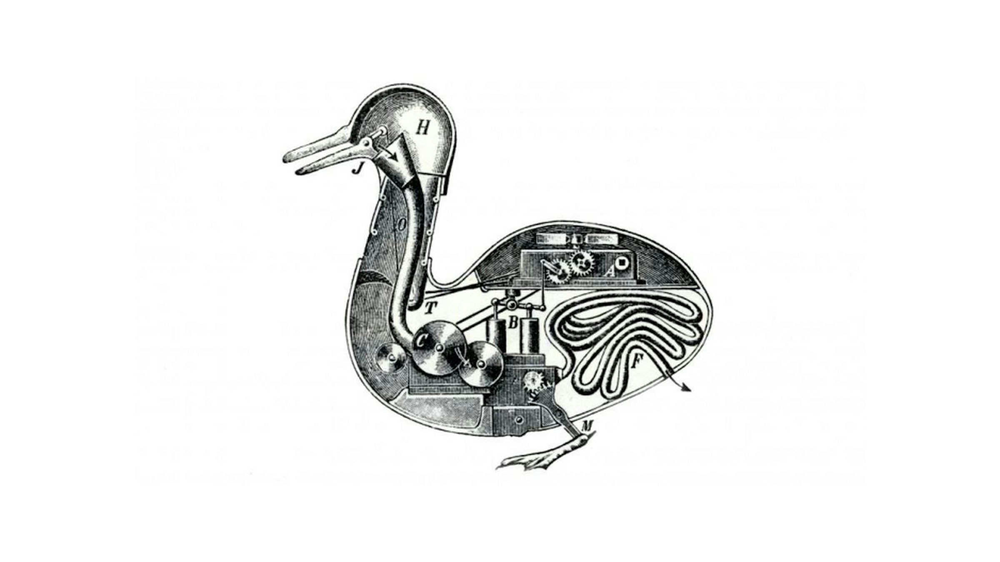

I have been thinking about how teams get trapped in their own processes lately.
Better prescribed is not better.

Jacques de Vaucanson's Digesting Duck, created in 1738, was an 18th-century automaton that appeared to consume food pellets, digest them, and produce excrement—a mechanical marvel that captivated Enlightenment Europe as it seemed to prove that life's processes could be reduced to purely mechanical operations. Though later revealed to be partly illusion (the "digested" output was pre-loaded green-dyed bread pellets rather than actual processed food), the Duck embodied the era's conviction that living beings were essentially complex machines whose functions could be duplicated through sufficiently clever engineering, challenging the notion of a vital spirit or soul and suggesting instead that even digestion—one of life's most fundamental processes—could be understood as a series of mechanical steps, a philosophy that would profoundly influence both industrial thinking and our modern tendency to decompose complex organic systems into linear, reproducible processes.
— Claude Opus / AI
But it was still just a machine.
Why I keep building mechanical ducks
I find myself creating these mechanical ducks all the time.
We call them "processes," "frameworks," and "best practices." Like Vaucanson's duck, they can be incredibly sophisticated. I design detailed steps, clear inputs and outputs, measurable outcomes.
The appeal of the prescribed is seducing to me. When I create prescribed processes, I'm promising predictability in an unpredictable world. I'm offering the comfort of control: if we just follow the steps correctly, we'll get the desired outcome.
The process scales: train people on my process, and theoretically anyone can execute it.
The mechanical duck could perform its programmed behaviors flawlessly, but it couldn't adapt when the environment changed. It couldn't learn. It couldn't improvise. And most importantly, the duck couldn't truly be alive - only simulate it.
But I sense there must be something deeper about why we build those ducks out of metal.
The thing is, we need to provide some structure
Here's the central tension I face: teams need some structure to coordinate effectively, but too much structure kills the very capabilities I'm trying to coordinate.
The best processes I've created share a common characteristic: they're designed to enhance human judgment, not replace it.
Those processes provide guardrails and shared vocabulary, but they leave room for interpretation, adaptation, and evolution.
I think of it like improvisational jazz. The musicians know the key, they understand the rhythm, they have a sense of the structure. But within those loose constraints, they create something unique in real-time, responding to what their fellow musicians are doing, reading the room, adapting to the moment.
Alas: this feels too freewheeling for too many too often.
Iteration beats prescription
Real ducks don't have user manuals. Life adapts through iteration.
The most alive processes emerge from doing, testing, learning. Not from my grand design sessions.
A team starts with something simple. They try it. The process breaks in unexpected ways. They fix it, but differently than I would have predicted. They try again.
But how do you really teach emergence in organisations?
Emergence over engineering
Sometimes I think I should just give teams the minimum viable process and let them evolve it.
Start with the simplest thing that could possibly work. Let them hit the constraints. Let them discover what they actually need, not what I think they need.
The mechanical duck was engineered to perfection for one specific demonstration. The duck, as we know it, emerged through millions of iterations, testing against countless environments, surviving because they could adapt.
Iteration and emergence might be the only way to avoid building mechanical ducks.
The tension remains: guaranteeing the outcomes the business needs and trusting that iteration produces something novel and something better than could be imagined at start. I've come to conclude limits to prescription come sooner than we usually think.
The limits is why I wanted to share this metaphor. I hope the duck reminds you on how organisations really work.